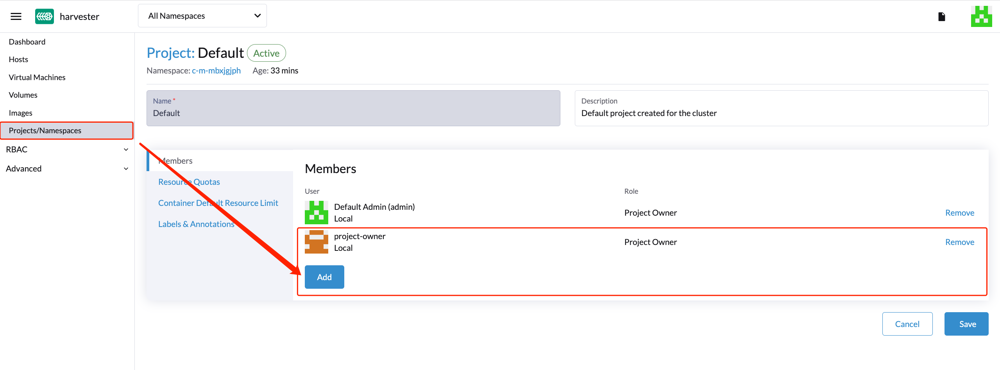
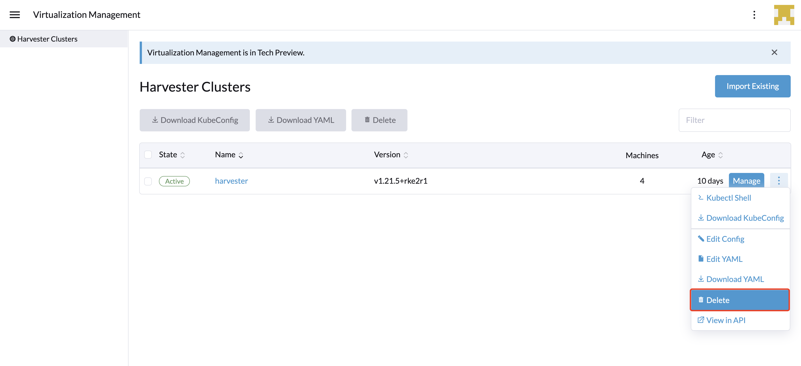

虚拟化管理
通过Rancher的虚拟化管理功能，您可以导入和管理多个SUSE Virtualization集群。它提供了一种解决方案，可以从单一视角统一虚拟化和容器管理。
有关使用各种云服务提供商部署Rancher和配置Kubernetes集群的信息，请参见 部署SUSE Rancher Prime服务器。
导入SUSE Virtualization集群
-
UI
-
API
-
检查并准备容器镜像。
为了方便导入任务，将在SUSE Virtualization集群上创建一个名为`cattle-cluster-agent-*
的新Pod。此Pod使用的容器镜像取决于您的Rancher服务器的版本（例如，如果您运行的是Rancher v2.7.9，则使用镜像`rancher/rancher-agent:v2.7.9）。此外，此动态镜像未打包到SUSE Virtualization ISO中，而是在导入期间从储存库中拉取。如果您的SUSE Virtualization集群无法直接从互联网访问，请执行以下操作之一：
-
为集群配置一个私有注册表并添加镜像。Harvester将自动从此注册表中拉取镜像。
-
如果您为访问外部服务配置了HTTP代理，请验证其是否按预期工作。您在Harvester配置中指定的DNS服务器应能够解析域名`docker.io`。
-
使用命令`docker pull rancher/rancher-agent:v2.7.9 && docker save -o rancher-agent.tar rancher/rancher-agent:v2.7.9`下载镜像。接下来，在每个集群节点上创建下载镜像的副本，然后使用命令`sudo -i ctr --namespace k8s.io image import rancher-agent.tar`将镜像导入到containerd中。最后，在每个节点上运行`sudo -i crictl image ls | grep "rancher-agent"`以确保镜像已准备好。
-
-
一旦Rancher服务器启动并运行，登录并点击汉堡菜单，选择*虚拟化管理*选项卡。选择*导入现有*以将下游SUSE Virtualization集群导入到Rancher服务器中。

-
指定`Cluster Name`并点击*创建*。然后您将看到注册指南；请打开目标 SUSE Virtualization 集群的仪表板并按照指南进行操作。

-
一旦代理节点准备就绪，您应该能够从 Rancher 服务器查看和访问导入的 SUSE Virtualization 集群，并相应地管理您的虚拟机。

每当代理节点卡住时，请在 SUSE Virtualization 集群上运行命令
kubectl get pod cattle-cluster-agent-* -n cattle-system -oyaml。如果显示以下消息，请检查第 1 步中的信息，终止此 pod，然后将自动创建一个新 pod 以重新启动导入过程。... state: waiting: message: Back-off pulling image "rancher/rancher-agent:v2.7.9" reason: ImagePullBackOff ... -
在 SUSE Virtualization 用户界面中，您可以点击汉堡菜单返回到 Rancher 多集群管理页面。

-
在 Rancher Kubernetes 集群中，创建一个新的
Cluster资源。示例：
apiVersion: provisioning.cattle.io/v1 kind: Cluster metadata: name: harvester-cluster-name namespace: fleet-default labels: provider.cattle.io: harvester annotations: field.cattle.io/description: Human readable cluster description spec: agentEnvVars: [] -
一旦
Cluster资源的状态更新，从.status.clusterName属性中获取集群 ID（格式：c-m-foobar）。 -
使用与集群 ID 同名的名称空间中的集群 ID 创建一个
ClusterRegistrationToken。您必须在词元的.spec.clusterName字段中指定集群 ID。示例：
apiVersion: management.cattle.io/v3 kind: ClusterRegistrationToken metadata: name: default-token namespace: c-m-foobar spec: clusterName: c-m-foobar -
一旦
ClusterRegistrationToken的状态更新，获取词元的.status.manifestUrl属性的值。 -
在SUSE Virtualization集群中，对设置`cluster-registration-url`应用补丁，并在`value`字段中指定从集群注册词元的`.status.manifestUrl`属性中获得的 URL。
示例：
apiVersion: harvesterhci.io/v1beta1 kind: Setting metadata: name: cluster-registration-url value: https://rancher.example.com/v3/import/abcdefghijkl1234567890-c-m-foobar.yaml
升级
要升级导入的 SUSE Virtualization 集群，您必须按特定顺序升级 Rancher、Harvester UI 扩展和 SUSE Virtualization。访问 Rancher v2.10.x 及更高版本中的 SUSE Virtualization 用户界面需要 Harvester UI 扩展。
-
检查 支持矩阵 以确定与 SUSE Virtualization 集群匹配的 Rancher 和 Harvester UI 扩展版本。
-
升级 Rancher。
-
升级 Harvester UI 扩展。
有关在隔离的环境中升级扩展的信息，请参见 Harvester UI 扩展与 Rancher 集成。
-
在 SUSE Virtualization v1.5.0 及更高版本中实现的功能在 Harvester UI 扩展中。如果您不升级 Rancher 和 Harvester UI 扩展，这些功能可能无法使用。
多租户
SUSE Virtualization利用现有的Rancher RBAC授权，使用户能够根据其集群和项目角色权限查看和管理一组资源。
在Rancher中，每个人都作为用户进行身份验证，这是一种登录方式，授予用户访问Rancher的权限。如 身份验证中所述，用户可以是本地用户或外部用户。
一旦用户登录到Rancher，其授权（也称为访问权限）由全局权限和集群及项目角色决定。
全局权限和集群及项目角色都是在 Kubernetes RBAC之上实现的。因此，权限和角色的执行由Kubernetes进行。
-
集群拥有者对集群及其内部的所有资源（例如，主机、虚拟机、卷、镜像、网络、备份和设置）拥有完全控制权。
-
项目用户可以被分配到特定项目，并有权限管理该项目内的资源。
|
强烈建议使用内置角色模板和项目范围的RBAC来管理用户访问。 SUSE Virtualization在Kubernetes和KubeVirt之上实现了自己的RBAC模型，并与Rancher风格的项目和多租户逻辑集成。在升级或重新配置期间，仅引用`kubevirt.io`角色的自定义`RoleBindings`可能会丢失、重置或与SUSE Virtualization的内部状态不一致。 |
多租户示例
以下示例很好地解释了多租户功能的工作原理：
-
首先，通过Rancher
Users & Authentication`页面添加新用户。然后点击`Create`以添加两个新的分离用户，例如`project-owner`和`project-readonly。-
`project-owner`是一个有权限管理特定项目资源列表的用户，例如默认项目。
-
`project-readonly`是一个对特定项目具有只读权限的用户，例如默认项目。

-
-
在导航到SUSE Virtualization用户界面后，点击导入的SUSE Virtualization集群之一。
-
点击`Projects/Namespaces`选项卡。
-
选择一个项目，例如`default`，然后点击`Edit Config`菜单将用户分配到该项目，并赋予适当的权限。例如，`project-owner`用户将被分配为项目所有者角色。

-
-
继续将`project-readonly`用户以只读权限添加到同一项目中，并点击*保存*。

-
打开一个隐身浏览器并以`project-owner`身份登录。
-
以`project-owner`用户身份登录后，点击*虚拟化管理*选项卡。在这里，您应该能够查看您被分配的集群和项目。
-
点击*镜像*选项卡以查看之前上传到`harvester-public`名称空间的镜像列表。如果需要，您也可以上传自己的镜像。
-
使用您上传的其中一个镜像创建虚拟机。
-
以另一个用户身份登录，例如`project-readonly`，该用户将仅对分配的项目具有只读权限。
|
`harvester-public`名称空间是一个预定义的名称空间，所有分配到该集群的用户均可访问。 |
删除导入的SUSE Virtualization集群
用户可以从Rancher用户界面的虚拟化管理屏幕中删除导入的SUSE Virtualization集群。选择要删除的集群，点击*删除*按钮以删除导入的SUSE Virtualization集群。
您还需要重置关联的SUSE Virtualization集群上的`cluster-registration-url`设置，以清理Rancher集群代理。

|
请不要运行`kubectl delete -f …`命令来删除导入的SUSE Virtualization集群，因为这将删除整个`cattle-system`名称空间，而该名称空间是SUSE Virtualization集群所必需的。 |